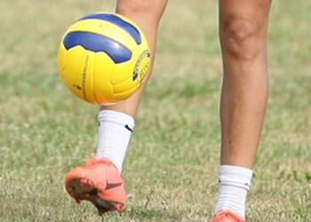
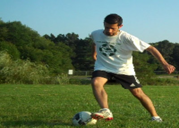
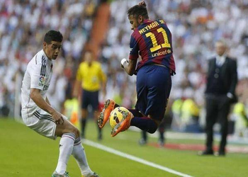

There is a saying amongst the football world where the “game is the teacher”. This concept is that you will learn to play football just by playing the game, most often in small sided games and matches. Whilst this is true to a great extent as team based play and training is most realistic, it becomes very difficult to refine and learn technique which is vital to improve the level of your game and is the foundation from which all football is built.
Soccer technique covers a variety of areas which should all be practised when learning how to play football. It is all about building a relationship with the ball being equally comfortable playing soccer on both feet.
First Touch – Being in control as soon as the ball arrives is vital to keep the ball and make the best decision for your team. You must learn to control that first touch as the ball comes to you on the floor, in the air, at various speeds and angles. At the start it will probably just bounce off your feet but over time you will learn how to caress the ball and move it in the area where you want whether that is dead at your feet, in front, side or even behind you. It all depends on the football pictures that you build.
Turning – The ability to turn your body with and without the football. Football is not about running in straight lines so it’s vital that you learn how to turn with the ball at your feet whilst being in control the whole time.
Dribbling – Using both feet to move the ball closely at your feet in different directions and speeds.
Running with the ball – take bigger touches whilst running with the ball under control. This is often straight line work focusing on accelerating and decelerating with the ball and reaching top speed with the ball at your feet.
Ball Striking – A football can be kicked in a number of different ways. Striking with power or creating a curl on the ball using different surfaces of your feet to gain the desired outcome. The key here is the part of the football that is struck along with body position and follow through. Timing is also vital when striking a moving ball or one that is in the air like a volley.
Quick Feet – The pace at which your feet move can be the decisive factor to beat an opponent. Developing quick reflex action with anticipation to make the ball do what you want at speed. Lionel Messi and Cristiano Ronaldo are masters of this.
Passing – Giving the ball to a team mate. Using the various surfaces, you will move the ball at various angles and speeds. The key is building the pictures of where your team mates are positioned or the areas they are likely to move into Receiving – linked with first touch this is the ability to collect the ball in a controlled manned when it has been passed to you by a team mate.
Soccer can be practised in a variety of ways but it is very important to get the most out of any training session. Technique can be tricky to master hence often it is easiest to start alone in an unopposed environment. Break the technique down into understandable chunks and build them back up. It is very similar to learning to play a musical piece where you learn to master one bar at a time but being mindful of the end goal. With technique it is all about repetition and purposeful practice to building up that muscle memory and brain circuitry. Where possible also try practices with multiple outcomes because at the end of the day, it is all about playing football matches so realistic game based training is key.
You won’t use this in a match situation but this is all about building that relationship with the ball and getting comfortable controlling it.
Running with the ball using both feet and 2 surfaces. Get those feet moving with ball in close control building a rhythm and tempo.
Learn to move the ball side to side incorporating turns and skills working off both feet. Football is not just played forward and back so learning how to move in different directions is very important.
A skill combination using multiple techniques with a final shot at the end. This progression moves in various directions using multiple surfaces and turning with explosive and dynamic movements.
